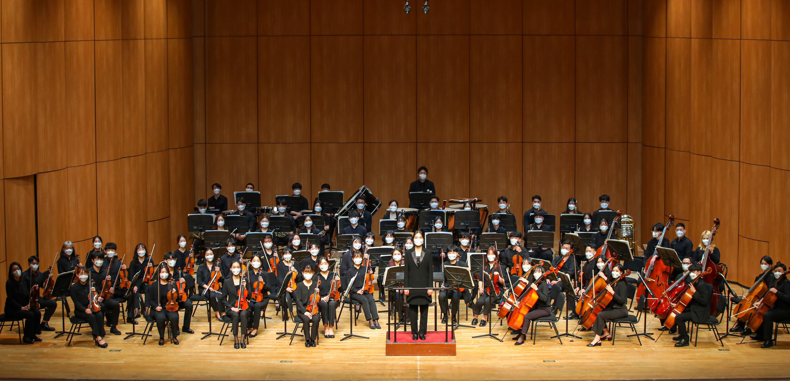

Welcome to KuPhil
Welcome to KuPhil
What`s NEW
remarKable
KUPHIL(Konkuk University Philharmonic)은
건국대학교 아마추어 오케스트라 동아리를
매년 50명 이상의 대규모 연주회를 개최하고 있습니다
volUntary
봉사활동의 일환으로
건국대학교 병원 암병동에서 월 1회 연주하면서
음악을 통한 행복을 나누고 있습니다
accomPlishment
봄, 가을에는 정기연주회, 11월에는 창립제를 통해
연습으로 갈고 닦아온 자신의 기량을 마음껏 드러내며
성취감을 느낄 수 있습니다

togetHer
아름다운 음악을 만든다는 공동의 목표를 가지고
함께 연습하는 과정 자체를 즐길 수 있습니다
excIting
음악캠프, 파트별 회식, 단체 회식,
각종 소모임과 비정기 이벤트를 통해
단원 간 친목을 활발히 하고 있습니다
friendLy
그룹레슨 및 개인레슨 연결, 단원 간 앙상블 등을 지원하며
초심자들도 부담없이 클래식과 친해질 수 있도록
적극 지원하고 있습니다